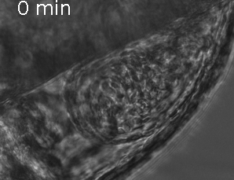
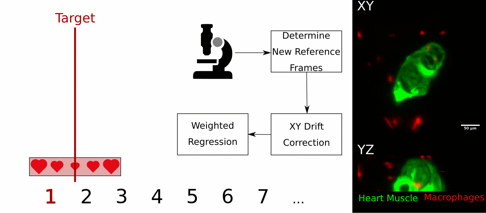

Real-time, Prospective Optical Gating
Uses a continuous IR brightfield (left)
Uses image similarity metrics to recover phase (center)
Forward predicts a trigger time (red/blue circle)
Captures fluorescence images only at target phase (right)
...back
Building a 3D Stack
We determine one trigger per heartbeat (left)
And capture a fluorescence image, moving the sample between captures (center)
To build a 3D volume (right)
...back
Real-time, Prospective Optical Gating

Even over 40 minutes the heart begins to change shape and size
After 18 hours it is almost unrecognisable
Prospective optical gating begins to fail around 40-60 minutes due to the reliance on earlier reference images
...back
Hybrid Optical Gating

Each stack we determine a new reference heartbeat but don't know where our chosen target phase is (left - blue)
We can use retrospective optical gating to align new reference heartbeats to old reference heartbeats and identify the correct target phase (left - red)
We can then take prospective optical gating stacks whilst maintaining phase-lock over hours (right)
...back
Developmental Imaging - Heart Looping
This video shows 18 hours of phase-locked time lapse imaging of the developing zebrafish heart during the looping phase
This fish expresses mCherry in endothilial tissues and cells
...back
Injury Imaging - Macrophage Response
This video shows 24 hours of phase-locked time lapse imaging of macrophage response after injury in the zebrafish heart
Injury has been induced by local laser ablation (white arrow)
This fish expresses GFP in heart muscle and mCherry in macrophages
...back